library(tidyverse) # enthält ggplot2
library(haven)
library(sjmisc)
library(naniar)
df <- read_csv("assets/data/datensatz_workshop.csv")
df <- df |>
mutate(
# ── Skalenwerte (Distress & Soziale Ungleichheit) ──────────────────
# Invertierte Items umkodieren (1=Immer → 5=Nie, hohe Werte = mehr Distress)
hs04_r = rec(hs04, rec = "rev"), # Hetze/Zeitdruck
hs05_r = rec(hs05, rec = "rev"), # Niedergeschlagen
hs09_r = rec(hs09, rec = "rev"), # Einsam
# Distress-Summenwert: 5 (kein Distress) bis 25 (hoher Distress)
distress = hs04_r + hs05_r + hs06 + hs07 + hs09_r,
# Soziale Ungleichheit: alle Items invertieren (hohe Werte = Akzeptanz)
im17_r = 5 - im17,
im18_r = 5 - im18,
im19_r = 5 - im19,
im20_r = 5 - im20,
im21_r = 5 - im21,
soz_u = im17_r + im18_r + im19_r + im20_r + im21_r,
# ── Faktoren ──────────────────────────────────────────────────────
geschlecht = factor(sex,
levels = c(1, 2),
labels = c("Männlich", "Weiblich")
),
# Altersgruppen
altersgruppe = factor(agec,
levels = 1:6,
labels = c("18–29", "30–44", "45–59", "60–74", "75–89", "90+")
),
# Bildungsniveau (ISCED 1997)
bildung = factor(isced97,
levels = 1:6,
labels = c("Primär", "Niedrig", "Mittel", "Post-Sek.", "Tertiär I", "Tertiär II")
),
# Erwerbsstatus
erwerbsstatus = factor(work,
levels = 1:4,
labels = c("Vollzeit", "Teilzeit", "Nebenher", "Nicht erwerb.")
),
# Wohnort (Selbstbeschreibung)
wohnort = factor(gs01,
levels = 1:5,
labels = c("Großstadt", "Vorort", "Mittel-/Kleinstadt", "Dorf", "Einzelhaus")
),
# Erhebungsgebiet Ost/West
gebiet = factor(
eastwest,
levels = 1:2,
labels = c("West", "Ost")
),
# Subjektiver allgemeiner Gesundheitszustand
gesundheit = factor(hs01,
levels = 1:5,
labels = c("Sehr gut", "Gut", "Zufriedenstellend", "Weniger gut", "Schlecht"),
ordered = TRUE
),
# Subjektive Schichteinstufung
schicht = factor(id02,
levels = 1:5,
labels = c("Unterschicht", "Arbeiterschicht", "Mittelschicht",
"Ob. Mittelschicht", "Oberschicht"),
ordered = TRUE
),
# Lebenszufriedenheit: negative Codes → NA
lebenszuf = ls01,
# Sozioökonomischer Index des beruflichen Status (aus Einkommen, Bildung und Beruf)
sei = isei08
) |>
drop_na(distress, soz_u, geschlecht)Datenvisualisierung mit ggplot2 – Tag 1
Daten, Aesthetics & Geometrien
Ankommen & Überblick
Willkommen zum Workshop „Datenvisualisierung mit ggplot2” 👋
An Tag 1 legen wir das Fundament – theoretisch und praktisch.
Ziele für heute
- verstehen, warum Datenvisualisierung wichtig ist
- die Grammatik der Grafiken als roten Faden kennenlernen
- die ersten drei Schichten praktisch umsetzen: Data → Aesthetics → Geometries
Bevor wir starten, laden wir alle benötigten Pakete und den Datensatz.
➡️ Workshop-Datensatz herunterladen (CSV)
➡️ Workshop-Datensatz herunterladen (SPSS)
Hier kannst du das Codebuch zum Datensatz runterladen, für eine bessere Übersicht, über die Variablen im Datensatz.
➡️ Codebuch Workshop Datensatz (PDF)
TipSetup: Pakete & Daten laden
Was ist Datenvisualisierung?
Datenvisualisierung ist die grafische Darstellung von Daten und Informationen.
Statt Zahlen in langen Tabellen zu lesen, werden Daten in visuelle Formen übersetzt:
Punkte, Balken, Linien, Flächen – Darstellungen, die unser Gehirn schneller und intuitiver verarbeiten kann als rohe Zahlenwerte.
Das klingt zunächst simpel. Aber Datenvisualisierung ist weit mehr als „Daten hübsch machen”.
Ziele der Datenvisualisierung
Eine gute Visualisierung verfolgt klare Ziele:
Verständliche Repräsentation von Daten
Komplexe Zusammenhänge, Verteilungen oder Muster werden durch eine Grafik
auf einen Blick erfassbar – ohne dass man Zahlen mühsam interpretieren muss.
Übersichtliche Repräsentation von Daten
Große Datenmengen lassen sich in einer einzigen Abbildung komprimieren und
strukturiert darstellen, anstatt in hunderten Zeilen einer Tabelle zu verschwinden.
Visualisierung als Teil der Analyse und Kommunikation
Grafiken sind kein Anhang zur Analyse – sie sind ein zentraler Bestandteil davon.
Sie helfen sowohl beim Verstehen der eigenen Daten als auch beim Vermitteln
von Ergebnissen an andere.
NoteMerksatz
„The simple graph has brought more information to the data analyst’s mind
than any other device.” — John Tukey
Grafiken sind Denkwerkzeuge – nicht nur Präsentationsmittel.
Warum Datenvisualisierung?
Es gibt vier zentrale Gründe, warum Datenvisualisierung in der empirischen Forschung
unverzichtbar ist. Zu jedem Grund schauen wir uns direkt ein konkretes Beispiel an.
1. Verständnis der Daten
Bevor wir Hypothesen testen oder Modelle rechnen, müssen wir unsere Daten kennen und verstehen.
Wie sind Variablen verteilt? Gibt es ungewöhnliche Muster? Sind die Daten überhaupt so, wie wir sie erwartet haben?
Eine Grafik beantwortet diese Fragen in Sekunden – eine Tabelle mit Kennwerten oft nicht.
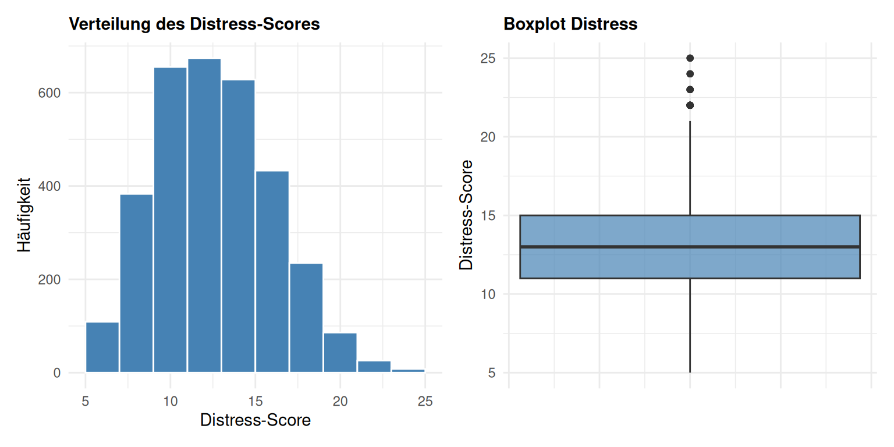
NoteWas sehen wir hier?
Mit einem Histogramm und einem Boxplot erkennen wir sofort:
- Die meisten Personen haben eher niedrige Distress-Werte
- Es gibt Ausreißer mit sehr hohen Werten
- Die Verteilung ist rechtsschief – das wäre aus einem Mittelwert allein nicht erkennbar
Dieses Wissen ist wichtig, bevor wir statistische Tests rechnen.
2. Kommunikation
Forschungsergebnisse müssen anderen vermittelt werden – Kommiliton:innen, Gutachter:innen,
der Öffentlichkeit oder Entscheidungsträger:innen.
Eine gut gestaltete Grafik transportiert Befunde oft klarer und schneller als eine Tabelle.
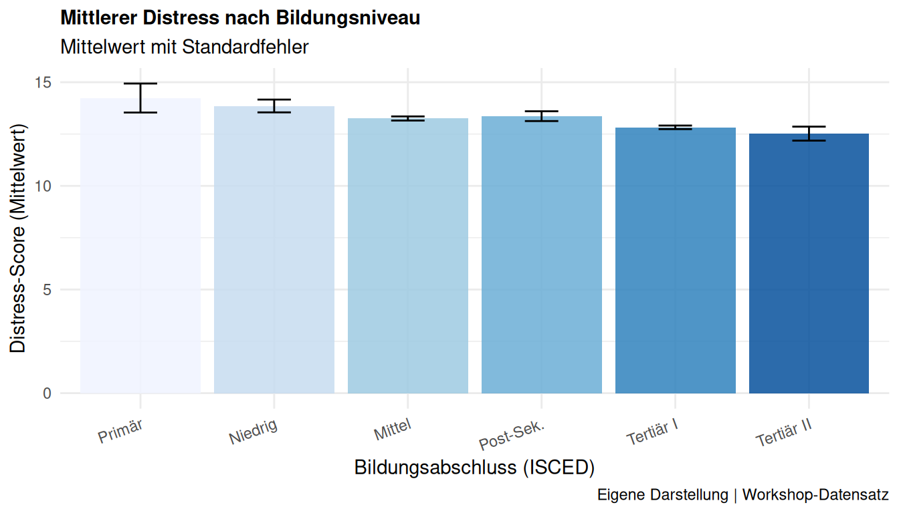
NoteWas sehen wir hier?
Dieser Befund könnte auch als Tabelle mit Mittelwerten und Standardfehlern präsentiert werden –
aber die Grafik macht das Muster sofort sichtbar: Bildung und Distress hängen zusammen.
Leser:innen erfassen das ohne jede statistische Vorkenntnisse.
3. Entscheidungsfindung
Visualisierungen helfen nicht nur beim Verstehen von Daten – sie unterstützen auch
konkrete Entscheidungen: Welche Gruppe braucht besondere Aufmerksamkeit?
Wo liegen Unterschiede? Welche Zusammenhänge sind relevant?
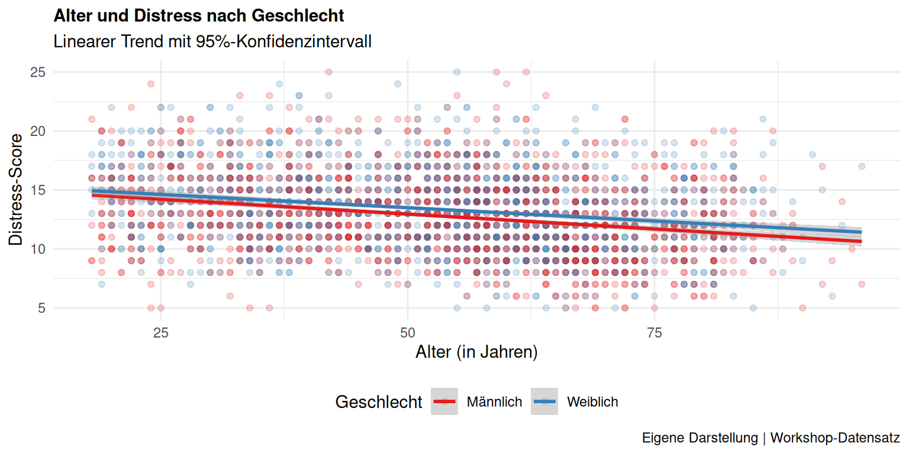
NoteWas sehen wir hier?
Die Grafik zeigt auf einen Blick:
- Bei welcher Gruppe steigt Distress mit dem Alter stärker an?
- Wo unterscheiden sich die Gruppen besonders deutlich?
- Lohnt es sich, diese Gruppen getrennt zu analysieren?
Solche Entscheidungen lassen sich auf Basis einer Grafik viel schneller und sicherer treffen
als auf Basis von Tabellen mit Mittelwerten.
4. Fehlererkennung
Daten aus Fragebögen, Messungen oder Datenbanken enthalten fast immer Fehler:
falsch kodierte Werte, vergessene Umkodierungen, unplausible Ausreißer oder
fehlerhafte Dateneingaben. Visualisierungen machen solche Probleme sofort sichtbar.
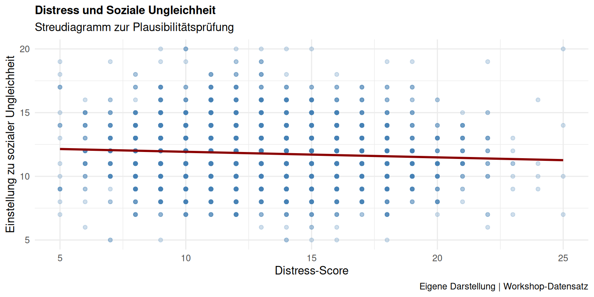
NoteWas sehen wir hier?
Bevor wir mit einer Analyse loslegen, schauen wir uns die Rohdaten an:
- Gibt es Punkte weit außerhalb des erwarteten Bereichs? → mögliche Eingabefehler
- Gibt es seltsame Cluster? → mögliche Kodierungsfehler
- Sieht die Verteilung plausibel aus? → Plausibilitätsprüfung
Ein kurzer Blick auf ein Streudiagramm kann Stunden der Fehlersuche ersparen.
WarningWas macht eine gute Visualisierung aus?
Eine gute Grafik ist:
- korrekt → sie stellt die Daten wahrheitsgemäß dar (keine abgeschnittenen Achsen, keine 3D-Effekte)
- klar → sie ist auf den ersten Blick verständlich
- vollständig → sie enthält alle notwendigen Informationen: Titel, Achsenbeschriftungen, Quelle
- sparsam → sie zeigt nur, was für die Aussage nötig ist – kein „chart junk”
Note📎 Exkurs: Das Anscombe-Quartett
Ein klassisches Beispiel aus der Statistik zeigt eindrucksvoll, warum Visualisierung unverzichtbar ist.
Francis Anscombe konstruierte 1973 vier Datensätze, die nahezu identische statistische Kennwerte haben:
| Kennwert | Wert |
|---|---|
| Mittelwert von x | 9.0 |
| Mittelwert von y | 7.5 |
| Varianz von x | 11.0 |
| Varianz von y | 4.12 |
| Korrelation (x, y) | 0.816 |
| Regressionsgerade | y = 3 + 0.5x |
Würde man nur diese Tabelle sehen, würde man denken: „Die vier Datensätze sind gleich.”
Doch ein Blick auf die Grafiken zeigt etwas völlig anderes:
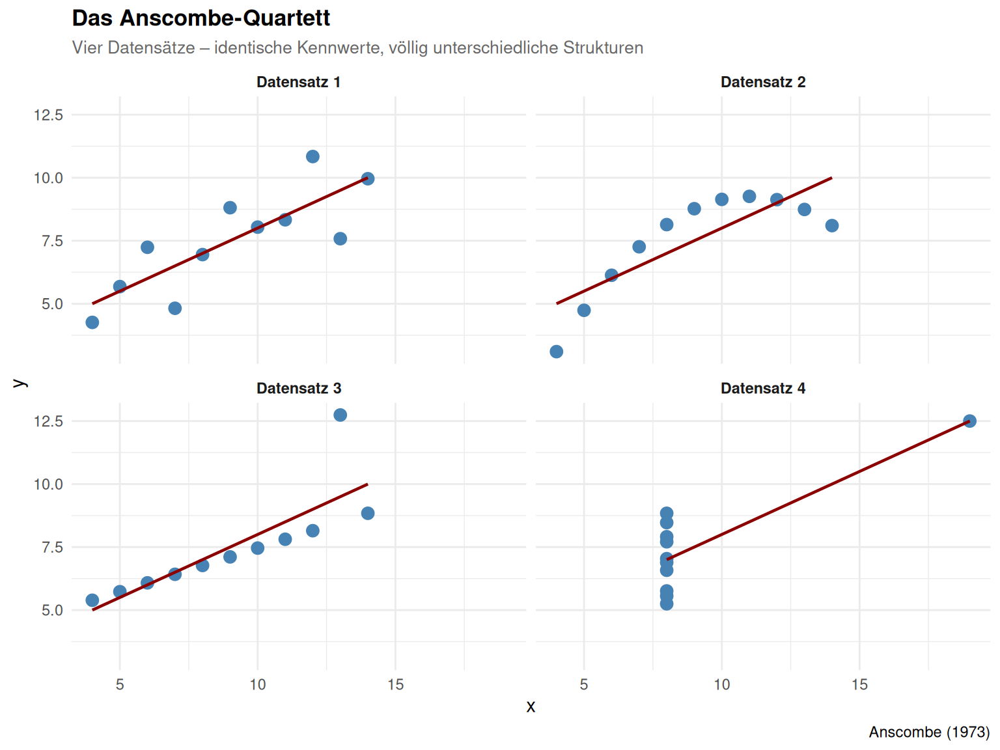
Was zeigen uns die vier Datensätze?
- Datensatz 1 → klassischer linearer Zusammenhang, gut geeignet für eine Regression
- Datensatz 2 → deutlich nichtlinearer Zusammenhang – eine Regressionslinie ist hier irreführend
- Datensatz 3 → ein einzelner Ausreißer verzerrt die gesamte Regressionslinie
- Datensatz 4 → alle Punkte liegen auf einer Geraden, außer einem einzigen Hebelwert – die Korrelation entsteht durch genau diesen einen Punkt
Hätten wir nur die Kennwerte betrachtet, hätten wir bei allen vier Datensätzen dieselbe Schlussfolgerung gezogen. Die Visualisierung zeigt: Das wäre in drei von vier Fällen falsch gewesen.
👉 Schau dir deine Daten immer zuerst grafisch an – bevor du Kennwerte berechnest oder Modelle formulierst.
Was ist ggplot2?
ggplot2 ist ein R-Paket zur Datenvisualisierung und Teil des tidyverse.
Es wurde von Hadley Wickham entwickelt und basiert auf der
„Grammar of Graphics” von Leland Wilkinson (2005).
Die Idee dahinter: So wie Sprache nach grammatikalischen Regeln aufgebaut ist,
folgen auch Grafiken einer Grammatik – einem System aus Schichten und Regeln,
das beschreibt, wie Daten in visuelle Elemente übersetzt werden.
Warum ggplot2?
- konsistente Syntax → einmal verstanden, auf alle Grafiken anwendbar
- schichtweiser Aufbau → Grafiken Schritt für Schritt aufbauen und anpassen
- enorme Flexibilität → von einfachen Histogrammen bis zu publikationsreifen Abbildungen
- aktives Ökosystem → hunderte Erweiterungspakete verfügbar
- Standard in der Wissenschaft → in den Sozialwissenschaften, Psychologie, Epidemiologie und vielen anderen Feldern weit verbreitet
NoteEinordnung
ggplot2 ist das meistgenutzte Visualisierungspaket in R.
Wer ggplot2 beherrscht, kann nahezu jeden Diagrammtyp erstellen –
von explorativen Rohdaten-Plots bis zu publizierten Abbildungen.
Die Grammatik der Grafiken
Das Herzstück von ggplot2 ist die Grammar of Graphics –
ein Schichtenmodell (Layers), das beschreibt, aus welchen Bausteinen eine Grafik besteht.
Jede Grafik kann sich aus aus sieben Layers zusammensetzen,
die von unten nach oben aufgebaut werden:
| Layer | Funktion |
|---|---|
| 🗂️ Data | Der Datensatz, der visualisiert werden soll |
| 🎨 Aesthetics | Mapping von Variablen auf visuelle Eigenschaften (x, y, Farbe, …) |
| 📐 Geometries | Die geometrische Form der Darstellung (Punkte, Balken, Linien, …) |
| 🔲 Facets | Aufteilen der Grafik in Teilgrafiken nach Gruppen |
| 📊 Statistics | Statistische Transformationen (Mittelwerte, Regressionslinien, …) |
| 📏 Coordinates | Das Koordinatensystem (kartesisch, polar, …) |
| 🖌️ Theme | Das visuelle Design (Hintergrund, Schrift, Gitterlinien, …) |
ImportantDer rote Faden durch beide Tage
Wir arbeiten uns Schicht für Schicht durch dieses Modell:
- Tag 1 → 🗂️ Data → 🎨 Aesthetics → 📐 Geometries
- Tag 2 → 🔲 Facets → 📊 Statistics → 📏 Coordinates → 🖌️ Theme
Am Ende kannst du jede Schicht bewusst einsetzen und weißt genau, welche Stellschraube welchen Teil der Grafik beeinflusst.
Wie sieht das im Code aus?
Die Grundstruktur eines ggplot2-Befehls folgt immer demselben Muster:
ggplot(data = DATENSATZ, aes(x = VARIABLE_X, y = VARIABLE_Y)) + # Data + Aesthetics
geom_DIAGRAMMTYP() + # Geometries
facet_wrap(~ GRUPPENVARIABLE) + # Facets
stat_TRANSFORMATION() + # Statistics
coord_SYSTEM() + # Coordinates
theme_DESIGN() # Theme
NoteDer
+-Operator
In ggplot2 werden Schichten mit + verbunden – nicht mit der Pipe |>.
Das + muss immer am Ende der Zeile stehen, nie am Anfang.
# ✅ richtig
ggplot(data = df, aes(x = age)) +
geom_histogram()
# ❌ falsch – + am Anfang der Zeile
ggplot(data = df, aes(x = age))
+ geom_histogram()In der Praxis braucht man nicht immer alle Schichten. Pflicht sind nur die ersten drei: Data, Aesthetics, Geometries. Alle anderen sind optional und werden je nach Bedarf ergänzt.
🗂️ Layer 1: Data
Der unterste Layer ist die Datenschicht – sie legt fest welcher Datensatz visualisiert wird.
In ggplot2 wird der Datensatz als erstes Argument an ggplot() übergeben:
ggplot(data = df)
Das Ergebnis ist eine leere Leinwand – denn wir haben noch nicht gesagt, welche Variablen wir darstellen wollen und in welcher Form.
NoteWas passiert hier?
ggplot(data = df) erstellt eine leere „Leinwand”.
R weiß jetzt, womit wir arbeiten – aber noch nicht, was gezeigt werden soll.
Das kommt in den nächsten Schichten.
Daten vorbereiten vor dem Plotten
Häufig bereiten wir Daten direkt vor dem Plot mit einer Pipe auf – z. B. um fehlende Werte zu entfernen oder Gruppen zu filtern:
df |>
ggplot(aes(x = distress))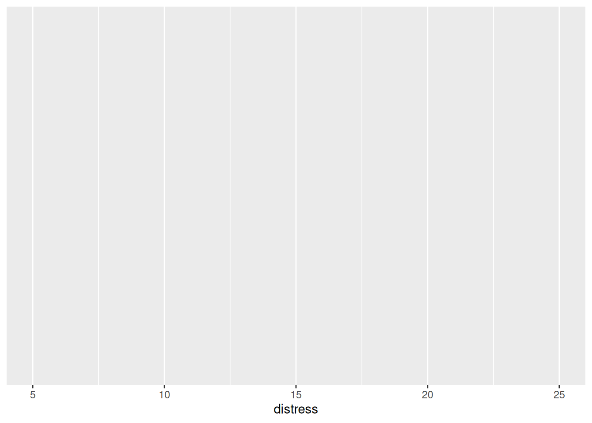
TipPipe in ggplot2
Man kann die tidyverse-Pipe |> nutzen, um Daten direkt in ggplot() zu leiten.
Das ist besonders praktisch bei schnellen explorativen Grafiken.
Aber Achtung: Innerhalb der ggplot()-Funktion gilt wieder +, nicht |>.
🎨 Layer 2: Aesthetics
Die zweite Schicht legt fest, welche Variablen auf welche visuellen Eigenschaften gemappt werden.
Das geschieht über die Funktion aes() – kurz für aesthetics.
aes() ist der Übersetzer zwischen deinen Daten und der Grafik:
Es verbindet Variablen mit Positionen, Farben, Formen und Größen.
ggplot(data = df, aes(x = age, y = distress))
Jetzt hat das Koordinatensystem Achsen – aber noch keine sichtbaren Datenpunkte.
Das liegt daran, dass wir noch kein Geom angegeben haben.
Die wichtigsten Aesthetics
NoteAesthetic-Überblick
| Aesthetic | Beschreibung | Beispiel |
|---|---|---|
x |
Position auf der x-Achse | aes(x = age) |
y |
Position auf der y-Achse | aes(y = distress) |
color |
Farbe von Punkten, Linien, Rändern | aes(color = geschlecht) |
fill |
Füllfarbe von Flächen (Balken, Boxen) | aes(fill = bildung) |
size |
Größe von Punkten | aes(size = age) |
shape |
Form von Punkten | aes(shape = geschlecht) |
alpha |
Transparenz | aes(alpha = distress) |
linetype |
Linientyp (solid, dashed…) | aes(linetype = gruppe) |
Global vs. lokal
Aesthetics können global (für alle Geome) oder lokal (nur für ein Geom) gesetzt werden:
# Global: color gilt für geom_point() UND geom_smooth()
df |>
ggplot(
aes(x = age, y = distress, color = geschlecht)) +
geom_point() +
geom_smooth(method = "lm", se = FALSE)
# Lokal: color gilt nur für geom_point()
df |>
ggplot(
aes(x = age, y = distress)) +
geom_point(aes(color = geschlecht)) +
geom_smooth(method = "lm", se = FALSE)
WarningInnerhalb vs. außerhalb von
aes() – der häufigste Fehler
- Innerhalb
aes()→ Wert hängt von einer Variable ab → Legende wird erzeugt - Außerhalb
aes()→ Wert ist fix für alle Beobachtungen → keine Legende
# ✅ Farbe nach Variable (Legende erscheint)
ggplot(df, aes(x = age, y = distress, color = geschlecht)) +
geom_point()
# ✅ Feste Farbe für alle Punkte (keine Legende)
ggplot(df, aes(x = age, y = distress)) +
geom_point(color = "steelblue")
# ❌ Häufiger Fehler: feste Farbe innerhalb aes()
ggplot(df, aes(x = age, y = distress, color = "steelblue")) +
geom_point()Übung
- Erstelle einen leeren
ggplot()-Canvas mitdf - Füge
aes(x = age, y = distress)hinzu - Füge
aes(x = geschlecht, y = distress)hinzu – was verändert sich? - Beobachte: Ohne Geom sieht man noch keine Punkte – aber die Achsen und Legende erscheinen bereits.
TipLösung
# Schritt 1: leere Leinwand
ggplot(data = df)
# Schritt 2: Achsen definieren
ggplot(data = df, aes(x = age, y = distress))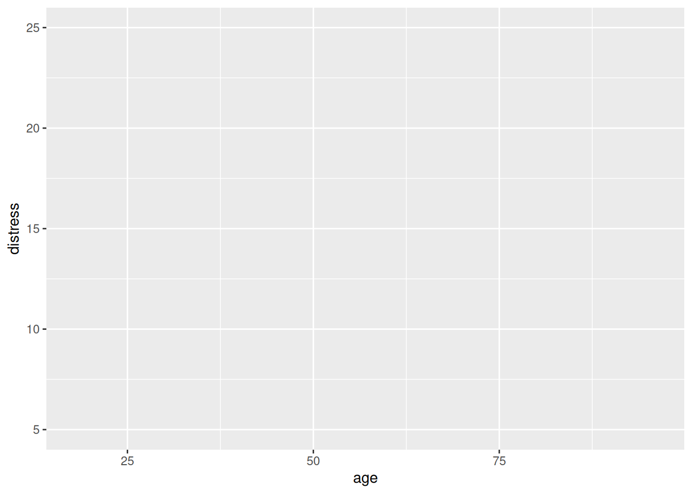
# Schritt 3: Faktoren auf Achsen
ggplot(data = df, aes(x = geschlecht, y = distress))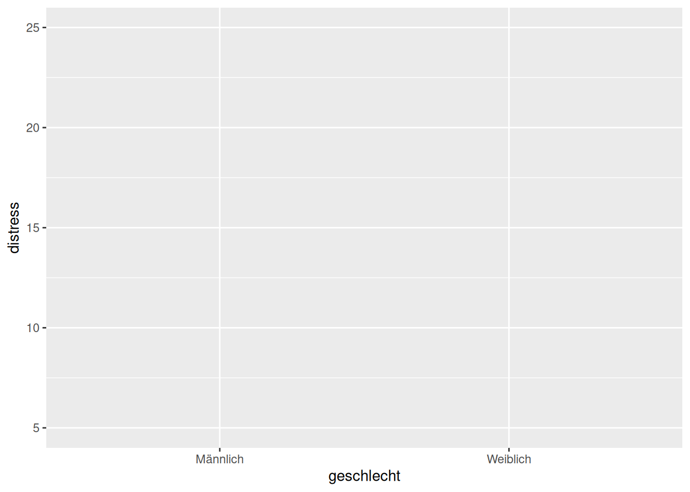
🎨 Aesthetics vertieft
Wir kennen aes() bereits als Layer 2 – die Brücke zwischen Daten und Grafik.
Jetzt schauen wir uns die weiteren Aesthetics genauer an, denn color, fill, alpha, size und shape
sind entscheidend dafür, wie lesbar und aussagekräftig eine Grafik wird.
color & fill
color färbt Punkte, Linien und Ränder.
fill füllt Flächen (Balken, Boxen, Histogramme).
Feste Farbe – außerhalb von aes()
Wenn eine Farbe für alle Elemente gleich sein soll, kommt sie außerhalb von aes():
ggplot(data = df, aes(x = age)) +
geom_histogram(binwidth = 5, fill = "steelblue", color = "white")
Farbe nach Variable – innerhalb von aes()
Wenn die Farbe von einer Variable abhängen soll, kommt sie innerhalb von aes():
df |>
ggplot(
aes(x = age, y = distress, color = geschlecht)) +
geom_point()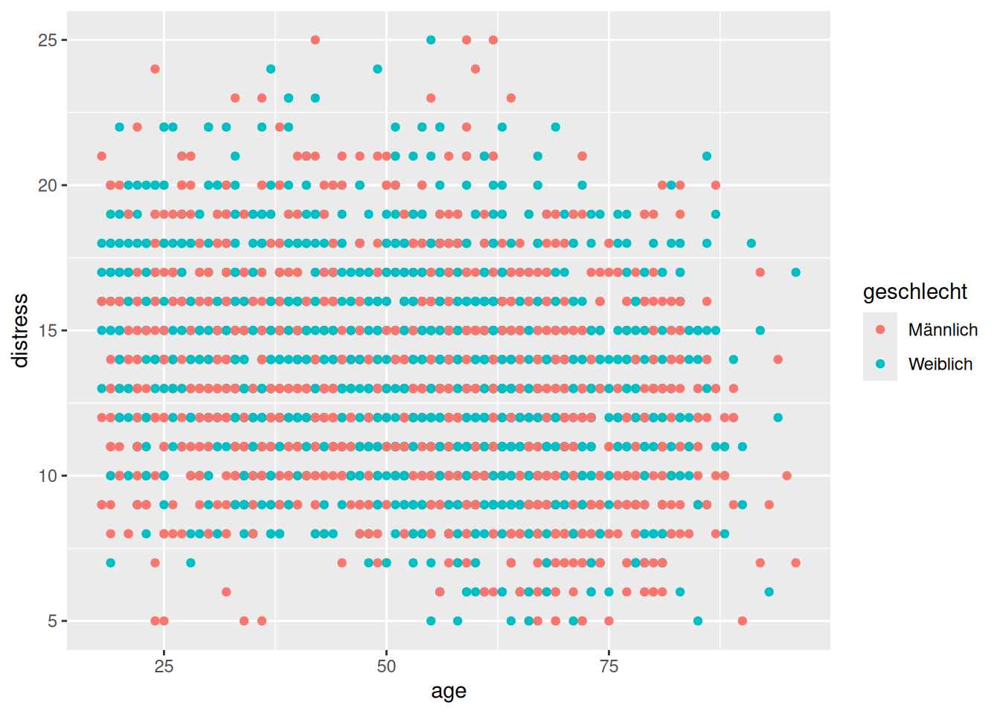
Warningcolor vs. fill – der häufigste Verwechsler
geom_point()/geom_line()→colorfür die Farbegeom_bar()/geom_histogram()/geom_boxplot()→fillfür die Fläche,colorfür den Rand
# fill färbt die Box, color den Rand
df |>
ggplot(
aes(x = geschlecht, y = distress, fill = geschlecht)) +
geom_boxplot(color = "gray30")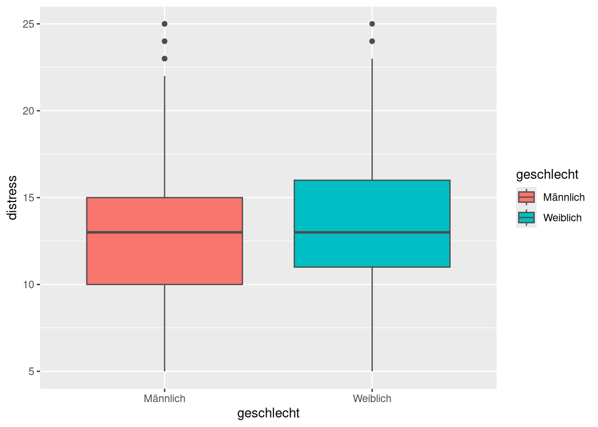
alpha – Transparenz
Bei vielen Beobachtungen überlappen sich Datenpunkte schnell.
Mit alpha steuert man die Transparenz – Überlappungen werden dadurch sichtbar:
ggplot(data = df, aes(x = age, y = distress)) +
geom_point(alpha = 0.3)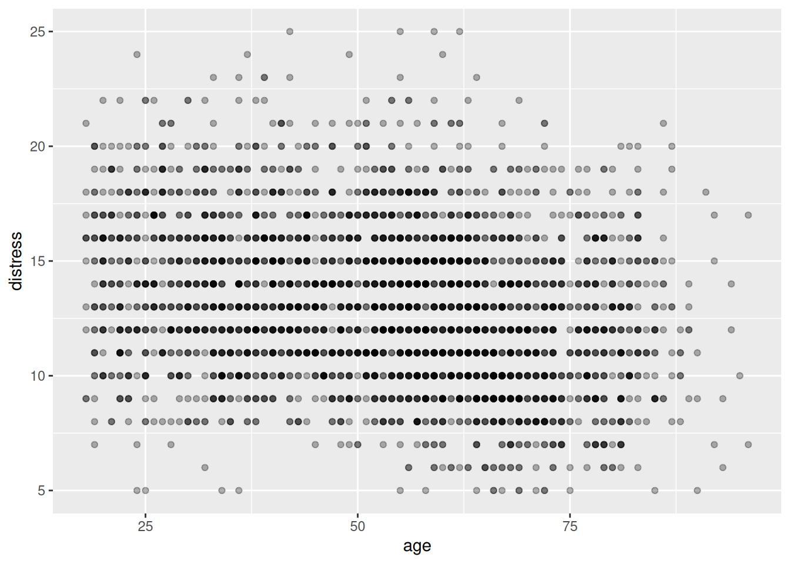
TipWie viel Transparenz?
Ein alpha zwischen 0.2 und 0.5 ist ein guter Ausgangspunkt bei größeren Datensätzen.
size & shape
size steuert die Größe von Punkten (Standardwert: 1.5).
shape steuert die Form der Punkte.
df |>
ggplot(
aes(x = age, y = distress, color = geschlecht, shape = geschlecht)) +
geom_point(size = 2, alpha = 0.5)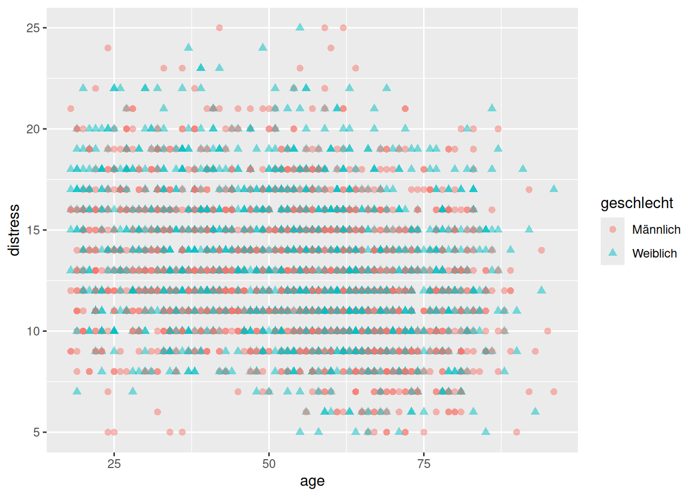
NotePunktformen in R
R bietet 25 verschiedene Punktformen (0–25).
Die gebräuchlichsten: 16 = Kreis (Standard), 17 = Dreieck, 15 = Quadrat, 18 = Raute.
📐 Layer 3: Geometries
Der dritte Layer ist die sichtbare Schicht – sie bestimmt, welche geometrische Form die Daten annehmen. Erst hier entsteht die eigentliche Grafik.
Geome werden mit geom_*() hinzugefügt und mit + an die vorherigen Layer gehängt.
ImportantDie wichtigsten Geome im Überblick
| Geom | Diagrammtyp | Wann sinnvoll? |
|---|---|---|
geom_point() |
Streudiagramm | Zusammenhang zweier numerischer Variablen |
geom_histogram() |
Histogramm | Verteilung einer numerischen Variable |
geom_bar() |
Balkendiagramm | Häufigkeiten einer kategorialen Variable |
geom_col() |
Balkendiagramm | Wenn die Balkenhöhe bereits berechnet ist |
geom_boxplot() |
Boxplot | Verteilung nach Gruppen |
geom_line() |
Liniendiagramm | Verlauf über Zeit oder geordnete Reihenfolge |
geom_density() |
Dichtekurve | Geglättete Verteilung |
geom_smooth() |
Trendlinie | Zusammenhang mit Unsicherheitsband |
geom_point() – Streudiagramm
Ein Streudiagramm zeigt den Zusammenhang zwischen zwei numerischen Variablen.
Jeder Punkt steht für eine Beobachtung.
ggplot(data = df, aes(x = age, y = distress)) +
geom_point()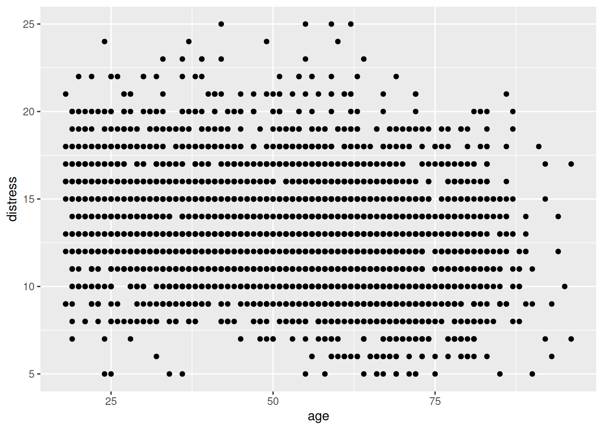
TipWarum Streudiagramme?
Streudiagramme sind ideal, um Muster, Cluster oder Ausreißer zu erkennen – und um zu prüfen, ob ein Zusammenhang überhaupt linear ist.
Punkte + Trendlinie
Geome lassen sich stapeln – mehrere Geome auf einmal:
ggplot(data = df, aes(x = age, y = distress)) +
geom_point(alpha = 0.3) +
geom_smooth(method = "lm", se = TRUE)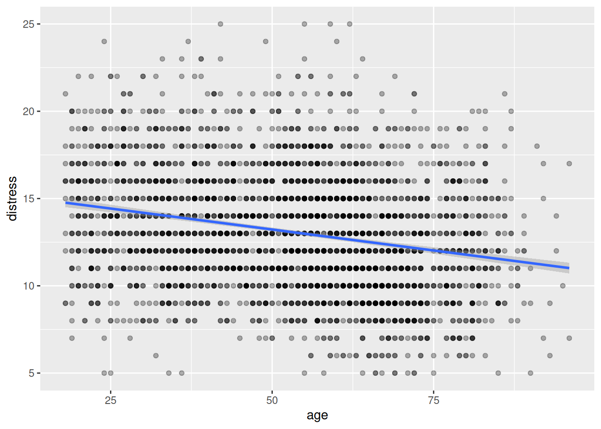
Note
geom_smooth()
method = "lm"→ lineare Regressionsliniemethod = "loess"→ geglättete Kurve (gut für nichtlineare Zusammenhänge)se = TRUE→ zeigt das Konfidenzintervall als Bandse = FALSE→ nur die Linie, ohne Band
geom_histogram() – Histogramm
Ein Histogramm zeigt die Verteilung einer numerischen Variable.
Es teilt die Werte in Klassen (Bins) ein und zählt, wie viele Beobachtungen in jede Klasse fallen.
ggplot(data = df, aes(x = age)) +
geom_histogram(binwidth = 5, fill = "steelblue", color = "white")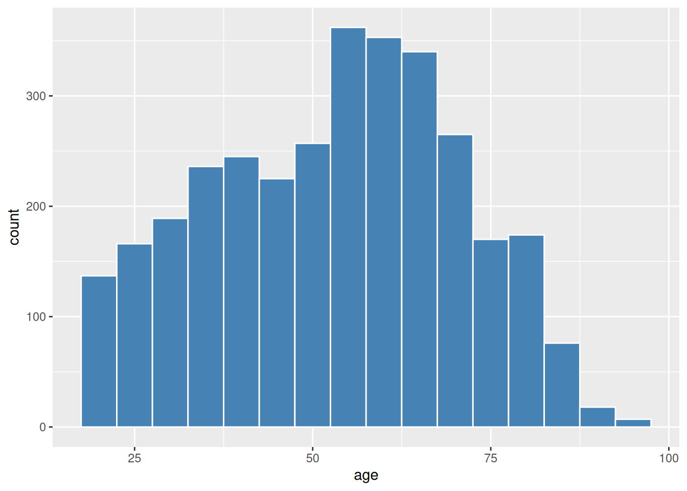
Note
binwidth vs. bins
binwidth→ legt die Breite jeder Klasse fest (z. B. 5 Jahre)bins→ legt die Anzahl der Klassen fest (Standard: 30)
Für inhaltlich sinnvolle Histogramme ist binwidth meist besser geeignet.
Histogramm + Dichtekurve
ggplot(data = df , aes(x = distress)) +
geom_histogram(aes(y = after_stat(density)),
binwidth = 2, fill = "steelblue", color = "white") +
geom_density(color = "darkred", linewidth = 1)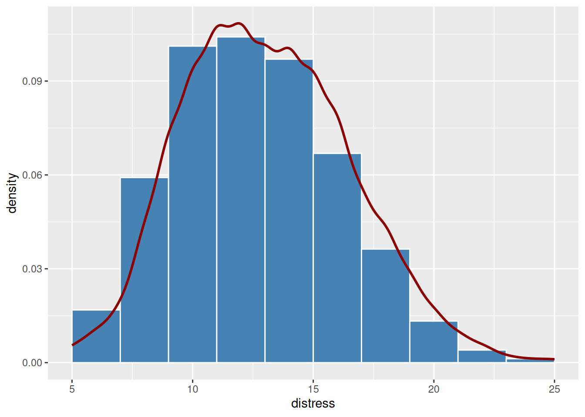
Note
after_stat(density)
Damit Histogramm und Dichtekurve auf derselben Skala dargestellt werden können,
muss die y-Achse des Histogramms von Häufigkeit auf Dichte umgestellt werden.
geom_bar() – Balkendiagramm
geom_bar() zählt automatisch, wie oft jede Kategorie vorkommt.
Es braucht nur eine Variable (auf der x-Achse).
df |>
ggplot(
aes(x = geschlecht)) +
geom_bar(fill = "steelblue")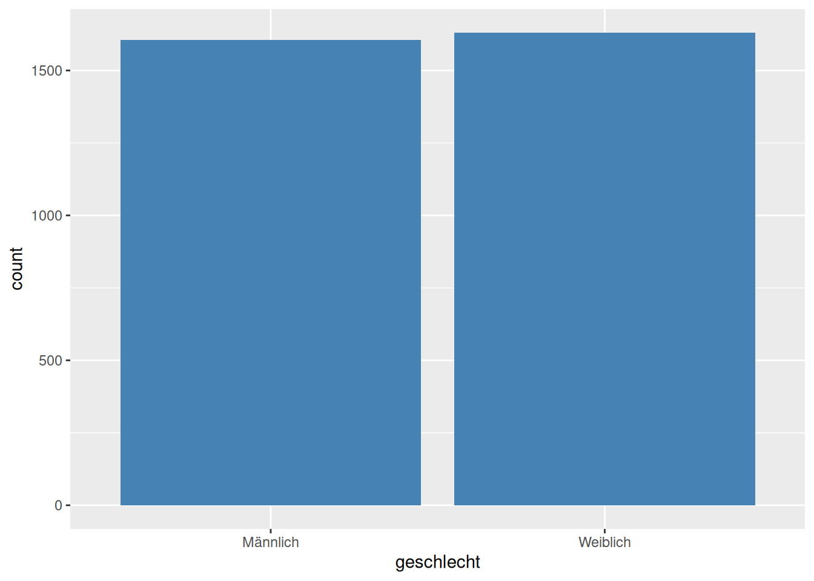
Gestapeltes / nebeneinander stehendes Balkendiagramm
Mit fill innerhalb von aes() lassen sich Balken nach einer zweiten Variable aufteilen:
df |> filter(!is.na(bildung)) |>
ggplot(
aes(x = bildung, fill = geschlecht)) +
geom_bar(position = "dodge") +
theme(axis.text.x = element_text(angle = 30, hjust = 1))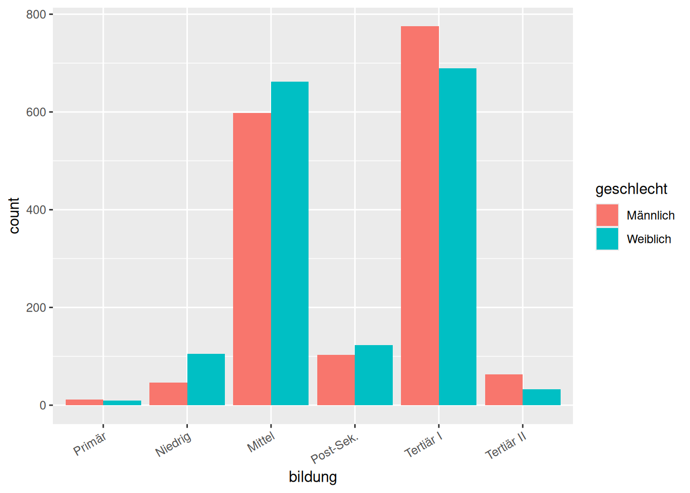
Note
position in geom_bar()
position = "stack"→ gestapelt (Standard)position = "dodge"→ nebeneinanderposition = "fill"→ gestapelt auf 100 % (Anteile vergleichen)
geom_boxplot() – Boxplot
Boxplots zeigen die Verteilung einer Variable kompakt und eignen sich besonders gut für Gruppenvergleiche.
df |>
ggplot(
aes(x = geschlecht, y = distress)) +
geom_boxplot(fill = "steelblue", alpha = 0.7)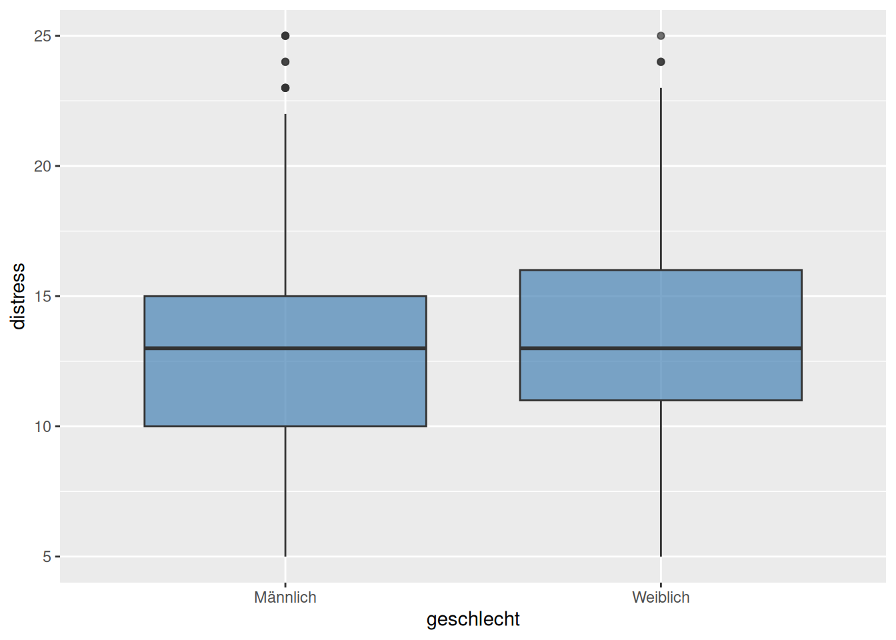
NoteWas zeigt ein Boxplot?
- Linie in der Box → Median
- Untere/obere Kante → 1. und 3. Quartil (IQR)
- Whisker → 1,5 × IQR nach oben/unten
- Punkte außerhalb → Ausreißer
Boxplot + Rohdaten
Boxplots können mit den echten Datenpunkten kombiniert werden,
um zu zeigen, wie viele Beobachtungen hinter jeder Box stecken:
df |>
ggplot(
aes(x = geschlecht, y = distress)) +
geom_boxplot(fill = "steelblue", alpha = 0.5, outlier.shape = NA) +
geom_jitter(width = 0.2, alpha = 0.2, color = "steelblue")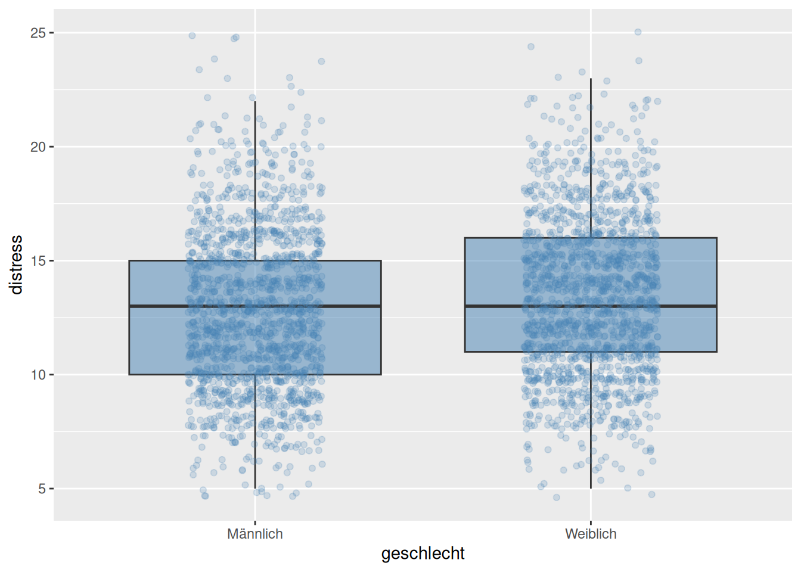
TipTipps
geom_jitter() ist wie geom_point(), aber die Punkte werden leicht horizontal versetzt dargestellt, damit sie sich nicht überlagern.
outlier.shape = NA im Boxplot verhindert, dass Ausreißer doppelt gezeigt werden.
Beschriftungen mit labs()
Eine vollständige Grafik braucht klare Beschriftungen.
In ggplot2 werden alle Textelemente über labs() gesteuert.
df |>
ggplot(
aes(x = geschlecht, y = distress, fill = geschlecht)) +
geom_boxplot(alpha = 0.7) +
labs(
title = "Distress nach Geschlecht",
subtitle = "Workshop-Datensatz",
x = "Geschlecht",
y = "Distress-Score (Summenwert, 5–25)",
fill = "Geschlecht",
caption = "Eigene Darstellung | Workshop-Datensatz"
)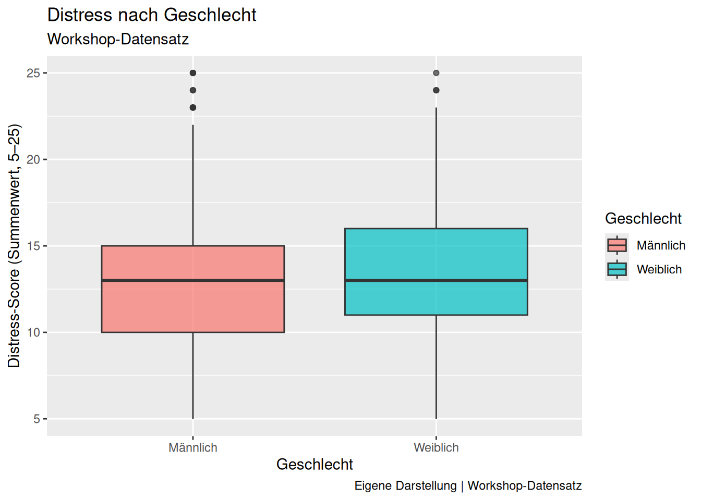
Note
labs() – Überblick
| Argument | Funktion |
|---|---|
title |
Haupttitel der Grafik |
subtitle |
Untertitel |
x |
Beschriftung der x-Achse |
y |
Beschriftung der y-Achse |
caption |
Fußzeile (z. B. Quelle) |
color |
Titel der color-Legende |
fill |
Titel der fill-Legende |
👉 Mit x = NULL oder y = NULL kann man eine Achsenbeschriftung ausblenden.
Übungen – Tag 1
Übung 1: Schichten aufbauen
Baue einen Plot Schritt für Schritt auf und beobachte, was jede Schicht bewirkt:
- Starte mit
ggplot(data = df)→ leere Leinwand - Füge
aes(x = age, y = distress)hinzu → Achsen erscheinen - Füge
color = geschlechtinaes()hinzu → Legende erscheint - Füge
+ geom_point(alpha = 0.4)hinzu → Punkte erscheinen - Füge
+ labs(title = "...", x = "...", y = "...")hinzu → Beschriftungen
TipLösung
df |>
ggplot(
aes(x = age, y = distress, color = geschlecht)) +
geom_point(alpha = 0.4) +
labs(
title = "Alter und Distress nach Geschlecht",
x = "Alter (in Jahren)",
y = "Distress-Score",
color = "Geschlecht",
caption = "Eigene Darstellung | Workshop-Datensatz"
)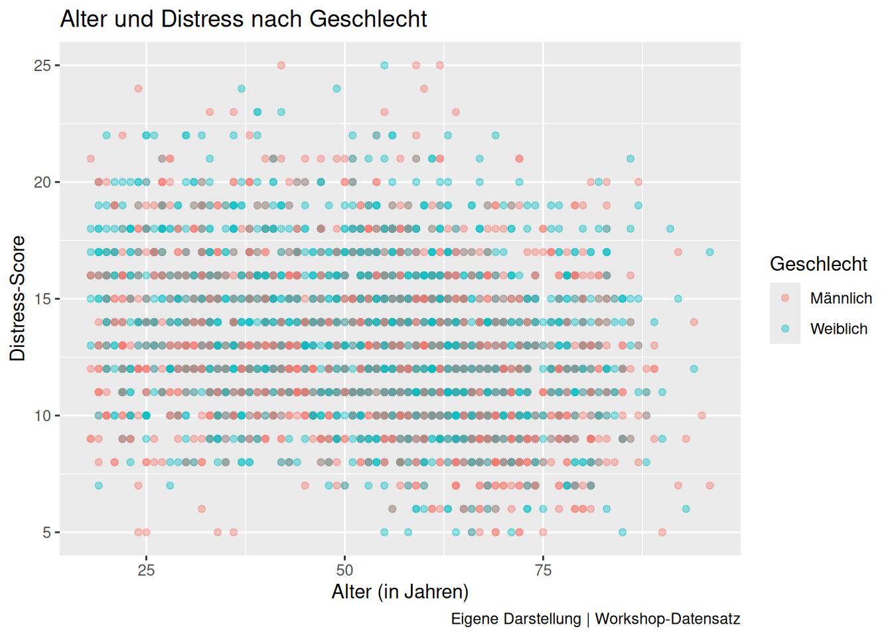
Übung 2: Geome kennenlernen
Erstelle für jedes der vier Geome eine eigene Grafik mit anderen Variablen als in den Beispielen:
geom_point():age(x) vs.soz_u(y) – mit Trendliniegeom_histogram(): Verteilung vonlebenszufmit sinnvollembinwidthgeom_bar(): Häufigkeit der Variablewohnortgeom_boxplot():soz_unacherwerbsstatus– mit Rohdaten (geom_jitter)
Füge bei jeder Grafik passende labs() hinzu.
TipLösung
ggplot(data = df, aes(x = age, y = soz_u)) +
geom_point(alpha = 0.3, color = "steelblue") +
geom_smooth(method = "lm", se = TRUE, color = "darkred") +
labs(
title = "Alter und Einstellung zu sozialer Ungleichheit",
x = "Alter (in Jahren)",
y = "Soziale Ungleichheit (Summenwert)",
caption = "Eigene Darstellung | Workshop-Datensatz"
)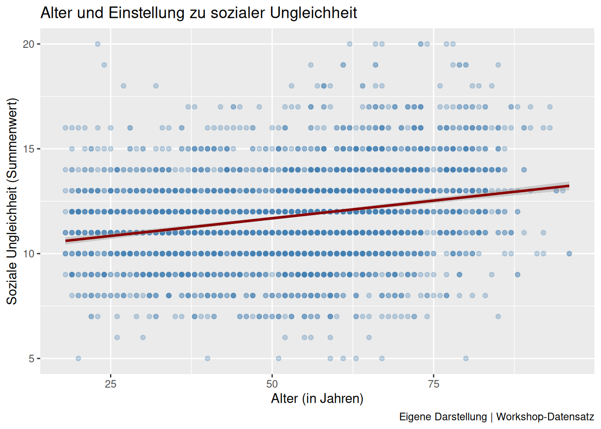
ggplot(data = df, aes(x = lebenszuf)) +
geom_histogram(binwidth = 1, fill = "steelblue", color = "white") +
labs(
title = "Verteilung der Lebenszufriedenheit",
x = "Lebenszufriedenheit (0 = unzufrieden, 10 = zufrieden)",
y = "Häufigkeit",
caption = "Eigene Darstellung | Workshop-Datensatz"
)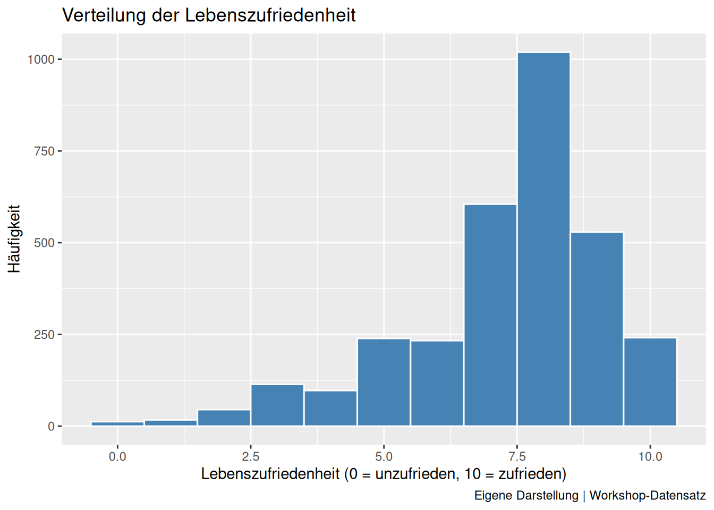
df |> filter(!is.na(wohnort)) |>
ggplot(
aes(x = wohnort)) +
geom_bar(fill = "steelblue") +
labs(
title = "Wohnort der Befragten (Selbstbeschreibung)",
x = "Wohnorttyp",
y = "Häufigkeit",
caption = "Eigene Darstellung | Workshop-Datensatz"
) +
theme(axis.text.x = element_text(angle = 20, hjust = 1))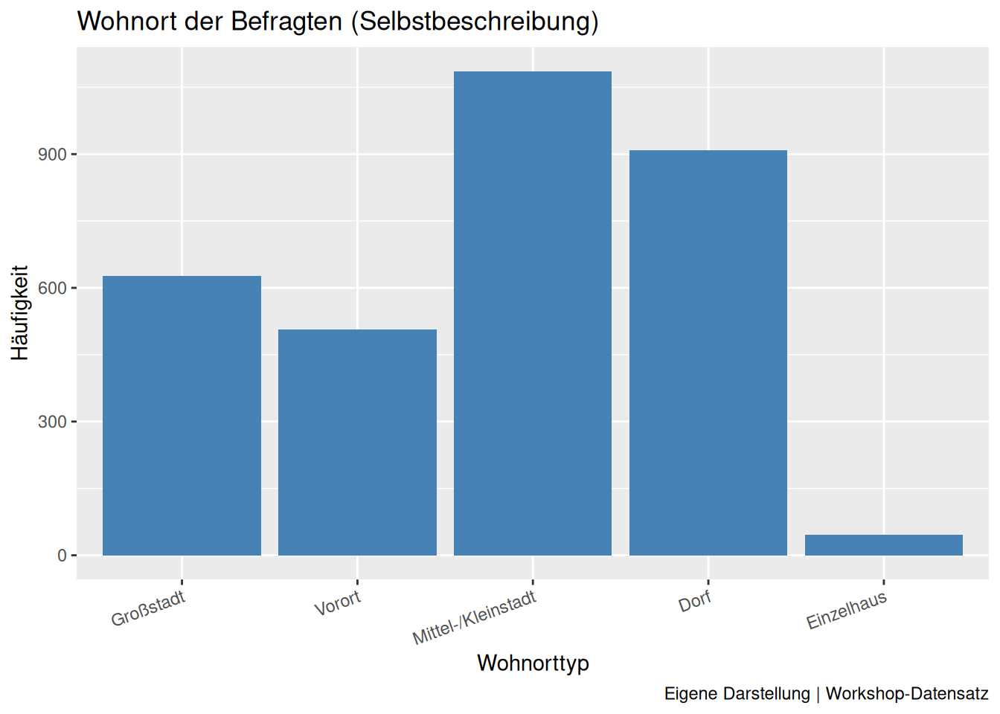
df |> filter(!is.na(erwerbsstatus)) |>
ggplot(
aes(x = erwerbsstatus, y = soz_u)) +
geom_boxplot(fill = "steelblue", alpha = 0.5, outlier.shape = NA) +
geom_jitter(width = 0.2, alpha = 0.2, color = "steelblue") +
labs(
title = "Einstellung zu sozialer Ungleichheit nach Erwerbsstatus",
x = "Erwerbsstatus",
y = "Soz. Ungleichheit (Summenwert)",
caption = "Eigene Darstellung | Workshop-Datensatz"
)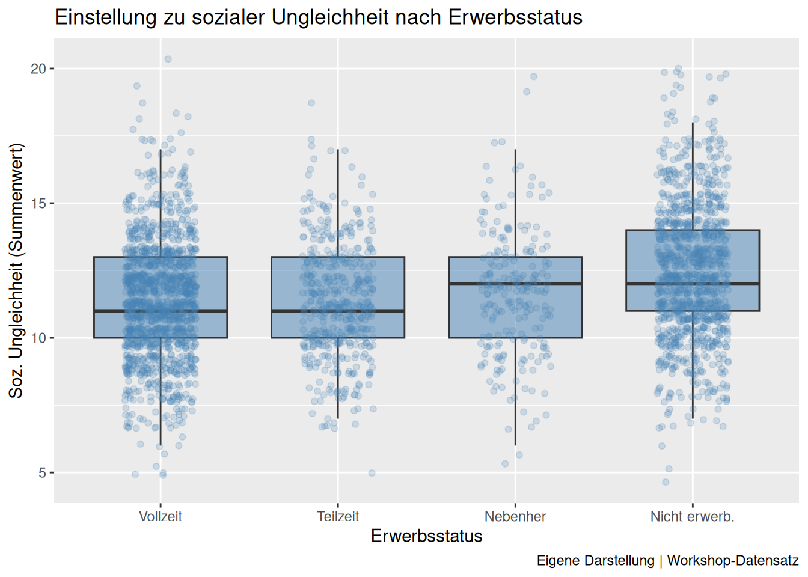
Übung 3: Aesthetics & Gruppen
Erstelle einen Scatter-Plot von age (x) und lebenszuf (y):
- Färbe die Punkte nach
gebietein (color = gebietinaes()) - Setze
alpha = 0.4außerhalb vonaes() - Füge je eine Trendlinie pro Gruppe hinzu (
geom_smooth) - Ergänze passende
labs()
TipLösung
df |> filter(!is.na(gebiet)) |>
ggplot(
aes(x = age, y = lebenszuf, color = gebiet)) +
geom_point(alpha = 0.4) +
geom_smooth(method = "lm", se = FALSE) +
labs(
title = "Alter und Lebenszufriedenheit nach Erhebungsgebiet",
x = "Alter (in Jahren)",
y = "Lebenszufriedenheit (0–10)",
color = "Erhebungsgebiet",
caption = "Eigene Darstellung | Workshop-Datensatz"
)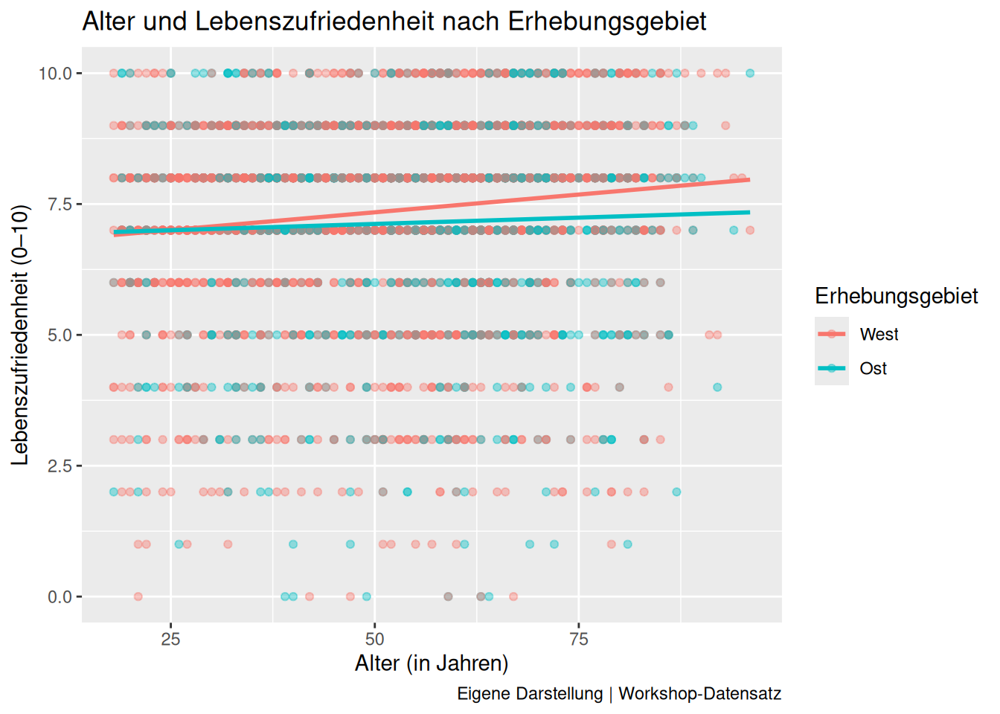
WarningHäufige Fehler
+am Anfang einer Zeile statt am Ende der vorherigen → Fehlermeldung- Feste Farbe innerhalb
aes()→aes(color = "steelblue")erzeugt keine blauen Punkte colorstattfillbei Boxplots/Histogrammen → nur der Rand wird eingefärbt, nicht die Fläche- NAs vergessen →
filter(!is.na(variable))vor dem Plot nicht vergessen
Abschluss Tag 1
Heute haben wir die ersten vier Schichten der Grammar of Graphics kennengelernt und verstanden, warum Visualisierung mehr ist als Dekoration:
- 🗂️ Data →
ggplot(data = df)– die Datenbasis - 🎨 Aesthetics →
aes(x, y, color, fill, alpha, size, shape)– der Übersetzer zwischen Daten und Grafik - 🎨 Aesthetics vertieft →
colorvs.fill,alpha,size,shape– Grafiken gezielt gestalten - 📐 Geometries →
geom_point(),geom_histogram(),geom_bar(),geom_boxplot()– die sichtbare Form
TipAusblick auf Tag 2
Morgen arbeiten wir uns die restlichen drei Layer hoch:
- 🔲 Facets →
facet_wrap(),facet_grid()– Grafiken nach Gruppen aufteilen - 📊 Statistics →
stat_summary()– statistische Kennwerte direkt in der Grafik - 📏 Coordinates → Achsen transformieren, umdrehen, Tortendiagramm mit
coord_polar() - 🖌️ Theme → Farbpaletten, eigenes Design, publikationsreife Grafiken
- patchwork → mehrere Plots kombinieren
- Export →
ggsave() - Mini-Projekt → eine vollständige Abbildung von Anfang bis Ende
👉 Speichere dein Skript, damit du morgen direkt weitermachen kannst.